Garrick Burron, PhD
Learning designer. PhD, Curriculum and Pedagogy (Learning Sciences), University of Toronto (OISE), 2026.
These three case studies show how I decide what to build, who it is for, and where my judgment, not an AI tool's output, made the difference.
I work with AI critically, as a researcher: curious about what it can do and clear about its limits. I am largely self-taught in Claude and Claude Code. I learned them by building the tools on this page, on top of a solid understanding of how computers work. That is how I would teach them too: help people understand the tool and talk to it as intended.
- Case study 1. Content written once for people and AI agents: a tailored resume in about an hour, down from three to four.
- Case study 2. Content built to the skills of the people who maintain it: a lab site updated again after six years, a classroom guide that got instructors using the room.
- Case study 3. Making a change visible: an animation that made a program redesign clear to staff, and an alignment tool that shows its reasoning. The clearest case of my judgment correcting the tool is the practicum fix in case study 3.
On how these look. My work is plain on purpose. The evidence on cognitive load says decorative images and animation distract learners and add load, so I use colour, images and motion only when they carry meaning. I would change that if the evidence changed. Beside each sample is a short note on why it looks the way it does.
Case study 1: Writing for people and AI agents
Part 1: My job search system: discovery pipeline and application builder
Problem. A job search has two slow halves: finding the right postings, and tailoring a resume and letter to each one. Searching alone, I reached far fewer of the jobs that fit. AI drafting made tailoring fast but unreliable: early drafts overstated my role on a Government of Oman project as "leading" it, when two senior professors led it, and claimed a provincial ministry relied on an accreditation tool I built, which OISE uses internally.
Audience. Two readers for the same content: me, deciding and checking, and the Claude agents that search, score, draft, check and review.
My decisions and why.
- Write each rule once, for both readers. The same text teaches me and instructs the model. The scoring rubric is one plain-text file we both read, and each of the builder's 35 rules states the rule, its source and the reason for it; I can read why a rule exists, and the agents and an automated checker enforce it.
- Cast a wide net, and never guess. A weekly pipeline screens about 60 job sources and scores only the survivors against my rubric; anything it cannot read is marked unscored, not guessed.
- One bank of evidence, one source of truth. The builder draws from a bank of approved bullet points and adapts them to each posting, and tests every claim against a master record of what is true, so it cannot inflate what I have done.
- Lock corrected facts. When I catch a wrong claim, the correction goes into a list of 20 facts, each with the old wording that must not come back. A check fails any draft that uses it, and 56 automated tests confirm the rules catch what they should.
- Split the work. It began as one agent doing both halves, and it did neither well. Now the pipeline finds and ranks postings, five specialist agents build each application (posting analysis, evidence finding, drafting, fact auditing and a reviewer panel), and the two halves coordinate directly.
What AI did and what I did. I designed the process, set every rule and decided every fact; Claude wrote the code, scores the postings and drafts the documents. Every claim in a draft must trace to a source I approved, and nothing goes out until I have read it.
Result. About 30 applications have gone through the builder, five on the current build. A resume that took me three to four hours now takes about one, with more depth, because the builder remembers evidence I would not recall in the moment. Once a wrong claim is corrected, it rarely needs a second round. The pipeline reaches a much wider range of jobs than I would alone, ranked, so I can decide what to apply for and when.
Why it looks like this. Plain-text rules, so a person can read them and a machine can check them.

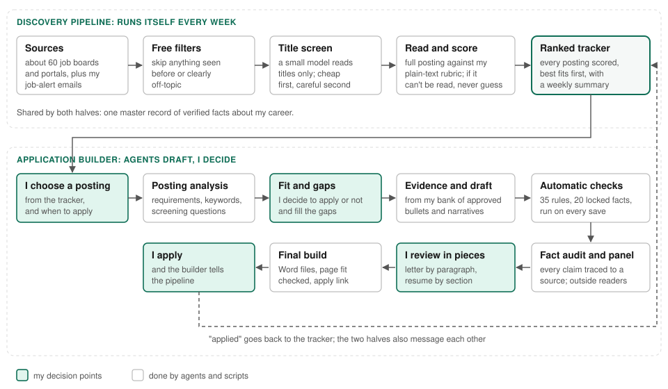
Part 2: The MT Guidebook standards guide
Problem. The Master of Teaching program's student guidebook, for roughly 800 student teachers, was built in Google Sites, and the format had become a bigger obstacle than the content. Unasked, with CTL colleague Alex Merrick, I am moving it to Google Docs templates. Many people and Claude agents will build pages for it after I leave, so it needs standards both can follow.
Audience. Program staff and the fellow TA who will maintain the guidebook, and the Claude agents that draft new pages from the template.
My decisions and why.
- Rules an agent can apply without guessing. Each colour is a named token with its use. Derived colours come with the formula ("multiply each by 0.75, round") and what to do if the source colour changes.
- Instructions inside the template. The placeholders tell the writer, person or agent, what good looks like: "one clear instruction, not a paragraph of theory," "delete this box if none."
- Judgment recorded with the rule. I tested a 15% and a 35% border darkening before settling on 25%, and the guide warns against reusing the orange offset on another colour, because it shifts the hue.
- Flag the gap before release. The guide notes that the callout box carries meaning by colour alone, an accessibility problem to fix before the template is final.
What AI did and what I did. Claude drafted the guide and the template; I set the standards, made the design calls and decided what went in.
Result. The migration is already changing behaviour: after the student portfolio section moved to Google Docs templates, technical questions fell from six-plus a week to one in the first month. The standards guide itself is newer; built in September 2026, it has been used for design work since October and is still being extended.
Why it looks like this. A few colours, each with one job.

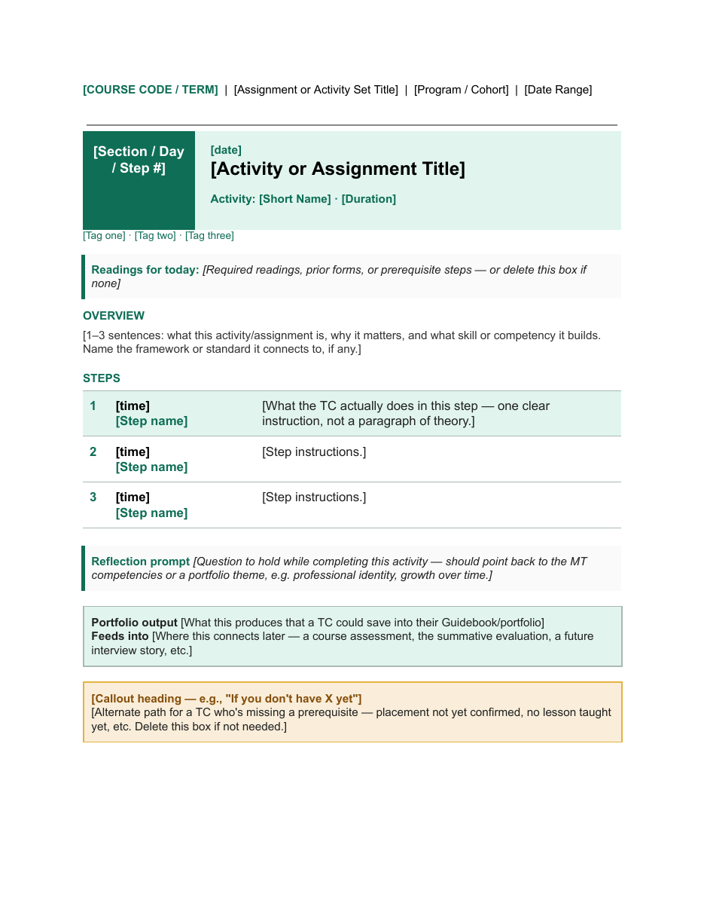
Case study 2: Simple on purpose
The Play Lab website
Live: https://sites.google.com/view/theplaylab
Problem. The Play Lab at OISE, University of Toronto, had a WordPress site that the lab's director and members could not edit themselves, and the lab could not afford to pay someone to maintain it. By the time I took it on, it was almost six years out of date.
Audience. Two groups: the people who read the site (graduate students, educators, gamers and game designers) and the people who have to keep it current (the lab's director, Dr. Leslie Stewart-Rose, Associate Chair and Director of the Master of Teaching program at OISE, and whichever teaching assistant she has hired that year).
My decisions and why.
- Change the back end, not the look. The lab's simple design was already theirs, so I rebuilt the site in Google Sites as close to the original as the platform allowed, with a few small compromises. The change is underneath: the lab can now edit it without outside help.
- Simple in workflow and in appearance. A simple site is simple to edit, and with fewer moving parts, fewer things can go wrong. A site the lab cannot update goes stale; a site the lab can update stays accurate.
- Fix what readers would notice. I redrew the lab's logo by hand as a vector image so it stays sharp at any size instead of pixelating.
Why it looks like this. The simple look is the lab's own design, kept on purpose. The maintainers' skills set the ceiling for the workflow, and I built to it.
What it shows. Designing for the person who maintains the content as well as the person who reads it. Training content works the same way: if the team cannot keep it current, it is wrong the week something changes.
Result. The director can now edit the pages herself, and any teaching assistant she hires has enough skill to keep it current: anyone who can use PowerPoint can update it. Since the move, the site has been updated every six months to a year, after nearly six years without an update.

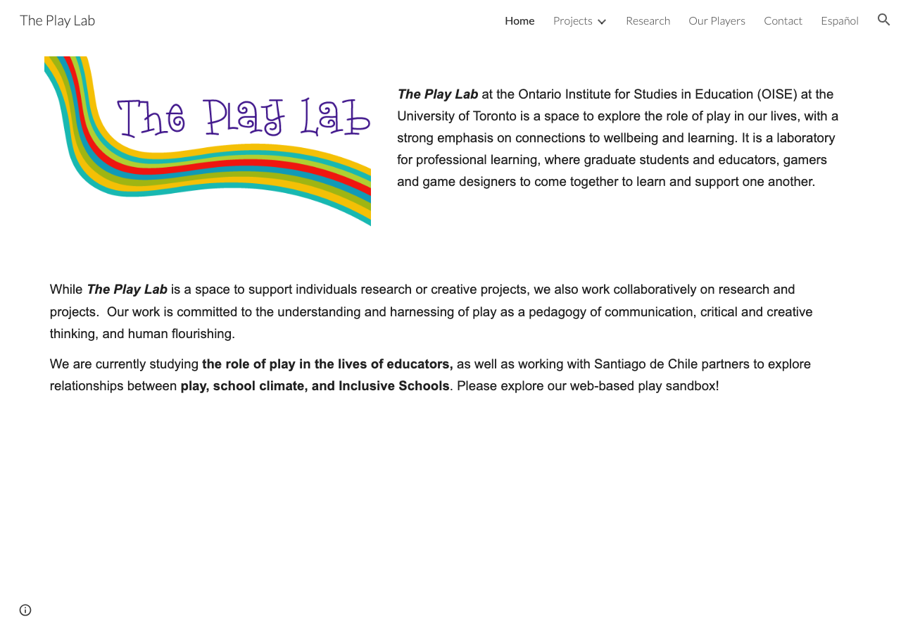
Active learning classroom guide
Problem. One of OISE's two purpose-built active learning classrooms has nine tables, each facing its own interactive board, with front displays that can broadcast to every board. My PhD found that classroom infrastructure is one of four structural barriers to active learning.
Audience. Instructors teaching in the room.
My decisions and why.
- Follow the class, not the hardware. The guide runs in the order an instructor meets the room: getting ready, troubleshooting, using it with students, shutting down.
- Photos of the key controls. The key steps show the actual button or cable, with red arrows where a cable has to move, so no one has to translate a description.
- Troubleshooting in the instructor's own words. Each problem is written the way someone would say it ("When I connect the USB-C connector to my laptop, my screen doesn't share"), followed by the fix.
- A way to keep teaching. The common faults each have a fallback that keeps the class going, and the guide says plainly what is not saved and what to do instead.
Result. Instructors who had been unsettled by the room's technology, and did not know what to do with it, started using its boards in class once they had the guide.
Why it looks like this. It is read at the podium, mid-task and under time pressure, like a job aid open during a live conversation.

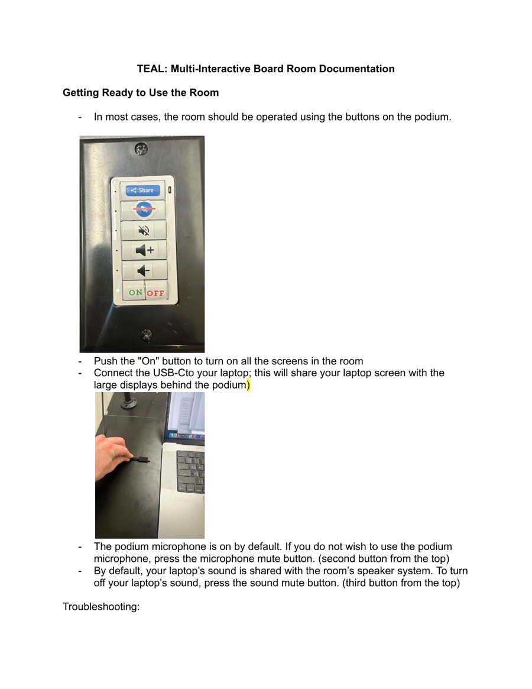
Case study 3: Making a change visible
Part 1: The MT program before-and-after animation
Problem. Ontario's move from a two-year to a one-year teacher-certification pipeline forced OISE to redesign its Master of Teaching program. Dr. Leslie Stewart-Rose, Associate Chair and Director of the program, needed to show where every course credit and practicum block goes under the new structure. Staff already had the change in writing, but did not understand it.
Audience. Department staff at a department meeting, and the program leaders who present the redesign.
My decisions and why.
- Show the movement. A before-and-after diagram, then an animation of credits moving from the old structure into the new one, term by term.
- Check the source before drawing. The plan was checked against the official Ontario College of Teachers accreditation chart, which showed that most old-program coursework runs across two terms without splitting. Coursework stays pooled; only practicum splits, by the program's term blocks.
- Accuracy over neatness. Year 2's old practicum was one placement, so it appears as one continuous block that visibly splits, never as two boxes from the start, which would imply two placements. I caught that and had it fixed. Compare the first draft with the final below. Practicum blocks are sized by hours in placement, not credit weight, and the split adds up exactly, so nothing is invented or lost.
What AI did and what I did. Claude built the diagram and animation code and rebuilt them through several rounds of layout fixes. I flagged an early wrong assumption about how terms divide, caught the practicum error, and decided what the picture had to say.
Result. Staff who had not understood the change from the written documents saw it at the department meeting; I was told the room met it with audible gasps. The team then asked for the static version so they could "point and talk over it."
"Worth every minute. Wish you could have heard the wow!!"
Dr. Leslie Stewart-Rose, Associate Chair and Director of the Master of Teaching program, OISE
Why it looks like this. Motion only where something moves, so the eye follows the change. Key: FCE is a full-course equivalent credit; OCT is the Ontario College of Teachers; S1 to S5 are the new program's terms.

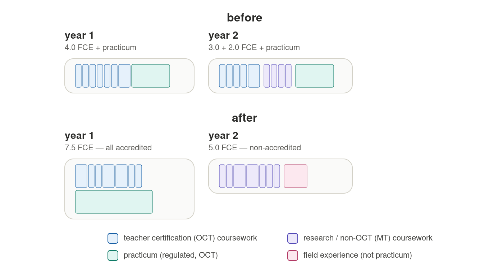

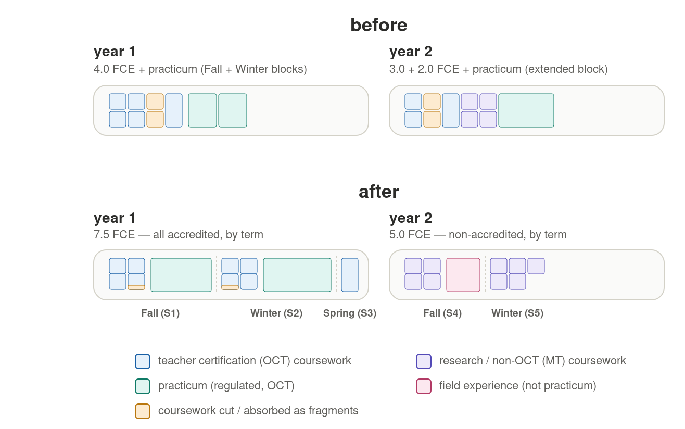

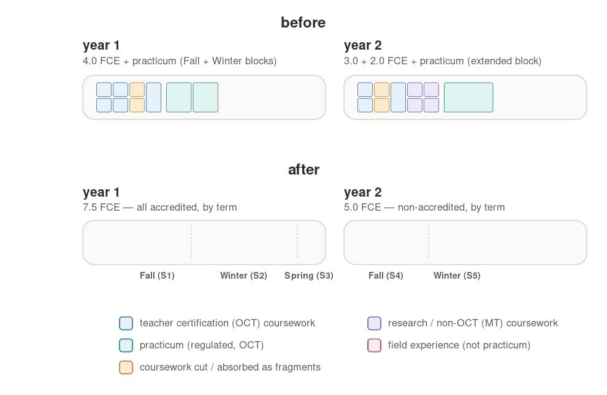
Part 2: Accreditation alignment
Problem. The same redesign meant OISE had to verify that the new program's course learning outcomes still meet Ontario's legal accreditation requirements: 18 elements in the regulation, interpreted through about 131 points in the Ministry's Accreditation Resource Guide. Done by hand, course by course, it takes weeks, and a bare yes or no would not survive an accreditation review.
Audience. Dr. Kathy Broad, Director of Curriculum Renewal at OISE, and a colleague who formerly worked at the Ontario College of Teachers. OISE uses the system internally to check compliance before it reports to the Ministry.
My decisions and why.
- An audit trail, not a score. Every match carries a High, Medium or Low confidence rating and a short reason, so a reviewer can check any link in seconds.
- Leave gaps visible. When Dr. Broad asked for a check against an outside framework of about 93 learning principles, 9 stayed unmatched, each with a stated reason, rather than padded to look complete. That also surfaced a finding: several accreditation areas, such as French-language education and Indigenous perspectives, had no overlap with that framework's learning-science literature.
- Show the whole chain. The visual traces law, guide section, program expectation and course outcome in one view; hovering any box lights up its full chain in both directions.
- Pilot on one course first. CTL7002, a mathematics teaching course, tested the method on its syllabus before it went program-wide.
What AI did and what I did. Claude extracted the outcomes, proposed matches and built the visuals. I set the method and the confidence scale, reviewed the matches, and decided what counted as a match and what stayed unmatched.
Result. The first flow diagram and the method behind the agent took about a day to build and test, and that method is still the one in use; later versions refine the output, not the reasoning. It is being built into an agent that program staff can question directly. Estimate: it will cut the work from about five weeks to less than one. In a test, that colleague asked it the kind of questions the College would ask about a course she designed herself; it answered completely, the way she would have.
Why it looks like this. One colour per layer; the reader is tracing a line, and nothing competes with it.

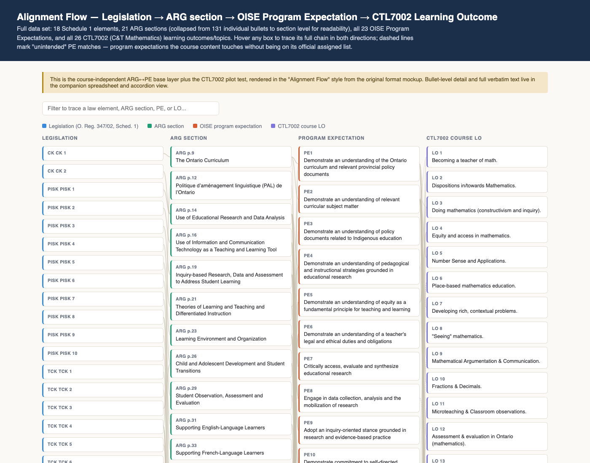
Keep what works, scrap what doesn't
- The guidebook's student portfolio. I could see the process was not working: students were struggling with Google Sites, a great deal of TA time went into teaching it, and some students still ended up sharing their documents directly. I wrote an assessment for the program committee: Sites pages must be open to the web while the work includes sensitive classroom moments; the evaluation of their work was becoming about managing Sites rather than the work itself; and Google Docs and Drive are the skills student teachers will use in schools. The committee accepted every part of it. After the move, technical questions fell from six-plus a week to one in the first month.
- The placement app. At the demos, staff said the full app suite was too complicated; they needed only some parts. I reviewed their feedback with the developer and proposed a no-install workaround, which the developer built: a light HTML version staff can use on locked-down work computers.
- My AI tools. My AI assistant, which runs my calendar and email and keeps me on track, is the product of several versions. The first could read my notes but never handled them properly, so I scrapped it and rebuilt it months later once newer models could do the job. When Cowork moved to the cloud and no longer met the department's privacy standards, I dropped every process I had built there and moved them to Claude Code, so the files stay on my computer and never end up in the cloud.
Gallery
Storyline training, Day 1 (CMASTE, University of Alberta, 2021)
Contracted through CMASTE, I taught Articulate Storyline 360 to a five-person team so they could build modules for their own project. I learned the software first, then designed two training days with built-in work time on their real project. Day 1 starts with design, not buttons: learners recall online courses they liked and disliked, then find good and bad examples on the web and critique them.
Why it looks like this. Black text on white, because the deck teaches the rule it follows: if something is there only to be pretty, ditch it.

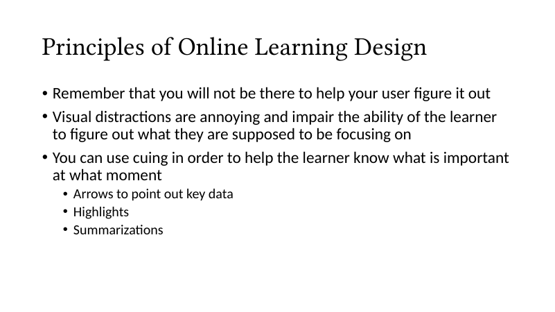
Arabic e-learning modules (CMASTE, University of Alberta, for the Government of Oman, 2016 to 2019)
On a teacher retraining project led by two senior CMASTE professors, I gave technical feedback and designed activities for the English source materials. Once Omani staff had translated the content, I built the Arabic modules in Articulate Storyline, right to left, from the translated text, my notes and the English slides, without speaking Arabic. I also drew original illustrations of students and teachers with culturally appropriate representation.
Why it looks like this. It follows the client's template and Arabic's right-to-left reading order.

Law and ethics course, OISE (450 student teachers)
I wrote the course's 12 online quizzes, then rewrote them. For the quizzes, Claude produced a copy edit and checked every question against the Ontario College of Teachers advisory it teaches; I decided what to change. Three of the changes:
- "When engaging with a bias incident" became "When responding to a bias incident," the advisory's own wording.
- "ideas/feelings" became "ideas or feelings," the register of a formal assessment.
- "Select the grounds in a social area that are NOT protected" became "Select the characteristics that are NOT protected grounds under the Ontario Human Rights Code." The original mixed up two different legal ideas.
I also wrote short technical instructions to go with the assignments, for student teachers new to Google Drive: where to look on the screen, what the icon looks like, and which option not to choose. Attendance in a class of this size runs from one slide: a QR code, a short link for anyone who cannot scan, and the session password.
Why it looks like this. Numbered steps, bold for the thing to click, nothing else.

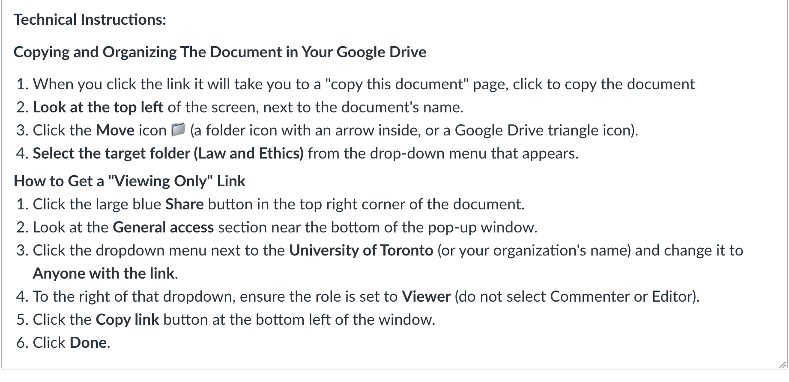

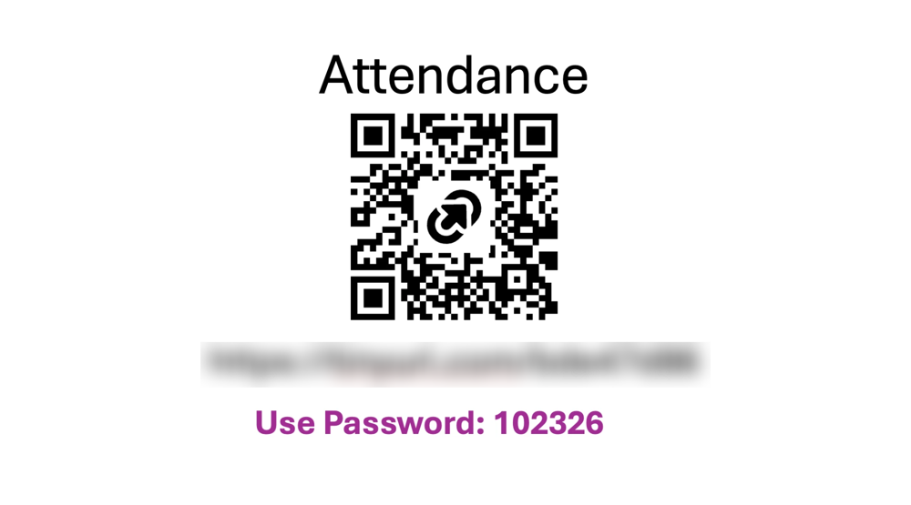
Ethics course inbox agent
The course inbox serves 450 student teachers, and many questions repeat. I taught a Claude agent from real questions: I pasted one in, the agent drafted a reply, I edited the reply, and the agent saved a rule to match. Then I reviewed the rules themselves, to catch anything odd that has crept in. Student questions are down from about eight a day to about five (my estimate), and the replies are friendlier than my own direct written style.
My AI secretary
A system I designed to run my calendar, email and task list, built on Claude Code and my Obsidian notes. An always-on server runs short scheduled routines through the day: a morning plan, an afternoon refresh, and sweeps that file what I have finished. One secretary agent is the single place I talk to, from my phone, and it hands bulky jobs to helper agents: drafting email and checking its tone, transcribing meetings, taking notes and turning them into to-dos. Their work flows back into one picture of all my tasks. Everything reads and writes one set of notes, which stay on my own devices.
Design decisions:
- One place to talk to. Email drafting and meeting notes began as separate assistants; I folded them under one secretary that coordinates helpers, so long email threads and transcripts stay out of its own context.
- Safe by default. Email is drafted, never sent; calendar changes need my yes to the exact change; every change to the system is staged, tested and shown to me before it goes live.
- Spend tokens only where they add value. A free script checks for work first, and Claude runs only if there is some. I measured token use by job, found that long interactive sessions, not the routines, used the most, and changed how I work. Routine jobs run on a smaller model; I tried the secretary on it for a day and moved it back, because its answers were less careful.
- Reliable over clever. I moved it off Cowork's scheduled tasks, which fired late or twice, onto an always-on server with fixed schedules.
Result. I miss fewer tasks, prioritize them better, and can adjust my goals easily. It keeps track of my day and pulls scattered information together, so I see the full picture of a project and the whole context of a task before I start. Through the day, it prompts me so I meet that day's goals.
Why it looks like this. One diagram, because the design is the point: one hub, small parts, and every arrow does one job.

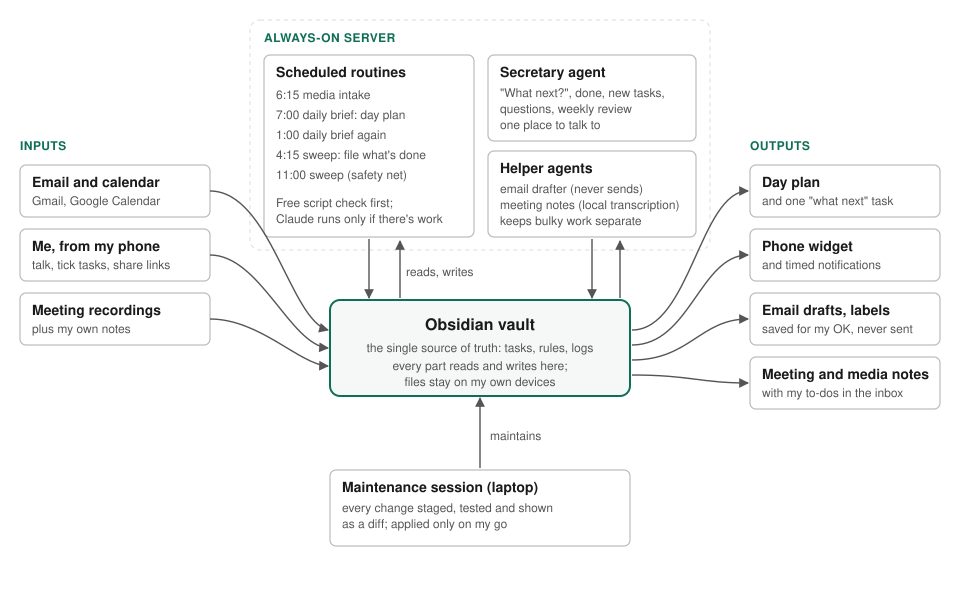